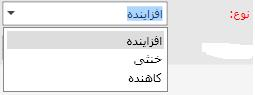

هر پارامتری که به نحوی در هنگام تولید کالا بر روی فرآیند تولید تاثیر میگذارد را در این قسمت تعریف می شود. برای تعریف عوامل در این قسمت بر روی دکمه اضافه
 کلیک کنید.
کلیک کنید.
کد به صورت اتوماتیک توسط سیستم تعیین می شود، البته قابلیت ویرایش شدن دارد. در فیلد عنوان، عنوان عامل جدید را تایپ کنید.
در صورتی که در کادر باز شده افزاینده را انتخاب کنید عامل مورد نظر تاثیر افزاینده بر روی تولید محصول خواهد داشت و کاهنده هم یه صورت عکس عمل میکند. در صورتی که خنثی را انتخاب کنید این عامل صرفا نقش اطلاع رسانی را در هنگام تولید محصول خواهد داشت.
در ادامه، فیلد وضعیت به صورت پیش فرض روی گزینه فعال می باشد، چنانچه در هر زمان آن را به حالت غیر فعال تغییر دهید دیگر نمی توانید از این عامل هنگام صدور کارت تولید استفاده کنید. عامل های غیر فعال در هنگام صدور کارت تولید نمایش داده نمی شود.
و در نهایت اگر توضیحی لازم بود در فیلد توضیحات تایپ کنید و بر روی دکمه تایید کلیک کنید. بدین ترتیب عامل جدید ایجاد می شود.